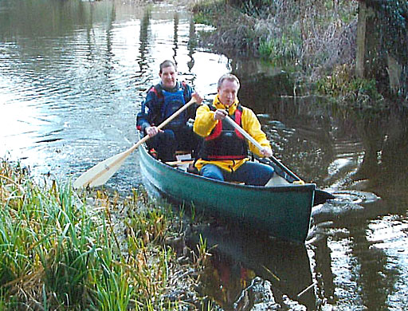
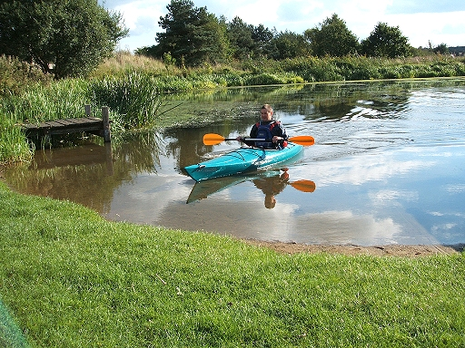

| After several trips down the Ardèche in the South of France I got hooked on canoeing and eventually decided to take the plunge and buy myself a canoe. This is a 14ft Mobile Adventure and although primarily a 2 man canoe it can be handled on your own in calm weather. This picture was taken on the River Stour near Stratford St. Mary. |  |
|  | Having got the bug I decided to invest in a smaller kayak (Perception Acadia) to paddle on solo trips. Being only 2/3 the weight of the canoe it's easier to get on top of the car and ideal when no one else is around to help paddle or load. |